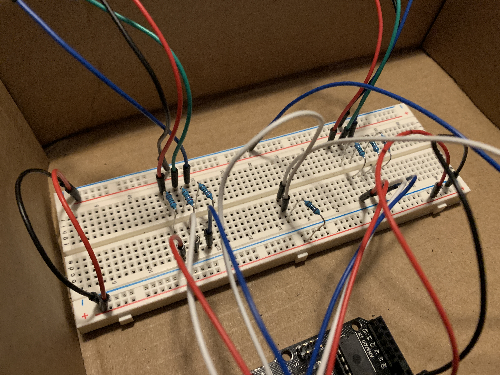
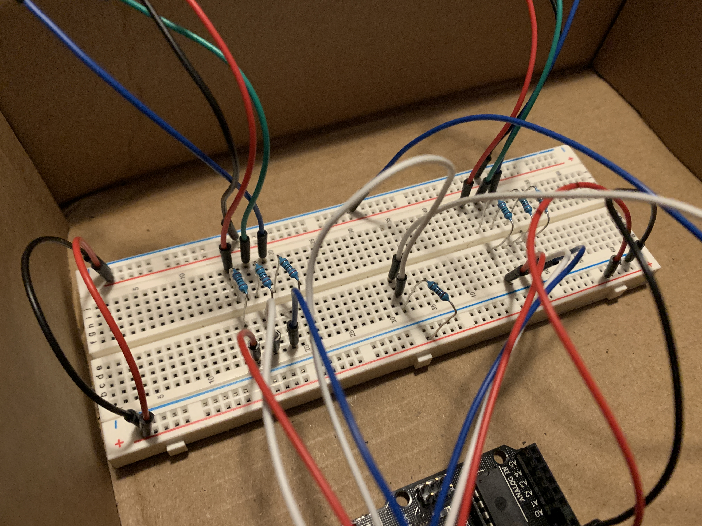
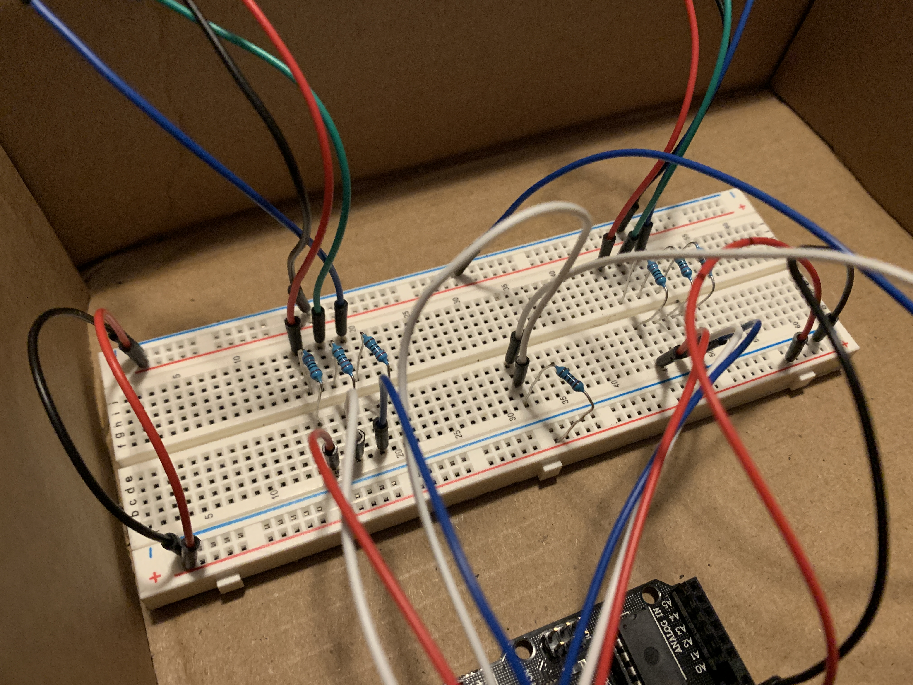

My primary inspiration for the enclosure and circuit I ended up making was a set of ping pong balls I found in my house. I thought that the light diffusing from the ping pong balls would look really cool and wanted to fit my RGB LEDs in a set of two ping pong balls. At first I wasn't sure what I would do with the light up ping pong balls, but I felt like they would work well as part of an alien and The Hypnotoad came to mind.
To build The Hypnotoad I started by designing a working version of the circuit I intended to use. I then soldered extensions onto both RGB LEDs and the button, allowing them to extrude from the enclosure. In order to fit the RGB LEDs into the ping pong balls I used my soldering iron to burn hole just big enough to fit the LEDs. I then cut holes in the top of the box and glued on the ping pong balls. Two very small holes for the power cable and button were also added. I made sure that the hole for the button was small enough that only the wire could fit though and the button would stay on the outside.
